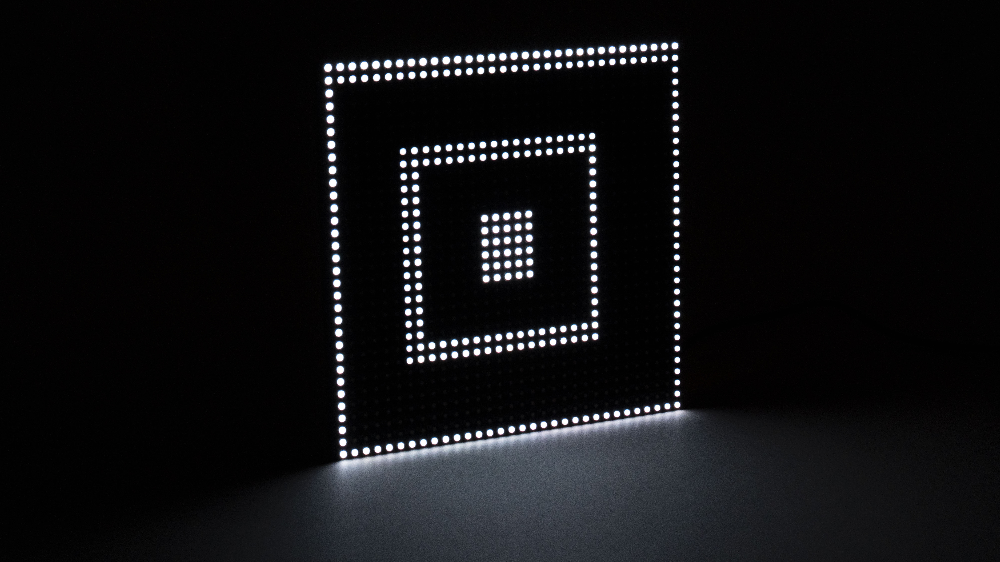
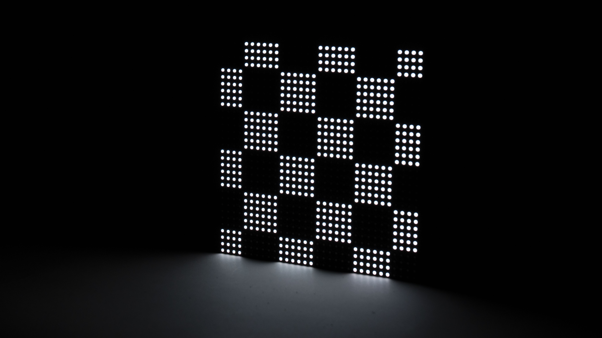

Metamor-
phosis
Metamorphosis è un'installazione ispirata all'omonimo capolavoro di M.C. Escher. Quest'opera, esposta su una matrice LED dinamica, cerca di dare vita alla visione iconica di Escher attraverso la tecnologia moderna.

Contenuti
La metamorfosi nasce dall'esame del concetto di motivi geometrici, non semplicemente come disegni astratti ma come espressioni figurative. La matrice stessa è diventata la nostra tela e con essa è nato un desiderio quasi ossessivo di riempire lo schermo, un fenomeno che chiamiamo horror vacui, l'impulso di saturare lo spazio, assicurando che fosse vivo di attività, forma e movimento.

Creazione
Guidati da questo, abbiamo approfondito i principi della tassellatura, come articolati da Escher, creando motivi ritmici e ripetitivi che si trasformano in qualcosa di più complesso nel tempo.
La scelta del nero, del bianco e del rosso come colori primari ha una profonda risonanza simbolica. Il bianco e il nero, tipici di Escher, riecheggiano la dualità della sua arte: luce e ombra, stabilità e cambiamento. Il rosso rappresenta la trasformazione, la passione e l'energia, la forza motrice del cambiamento. Insieme, questi colori amplificano la narrazione della metamorfosi, trascinando gli spettatori nel ciclo dinamico della creazione e della trasformazione.



